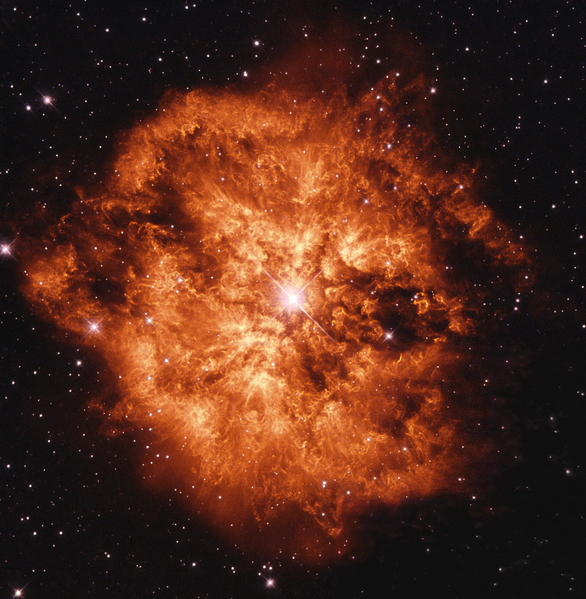

01
Media · Videnskab.dk
Cannibal stars and how to find them
Some stars don't simply die quietly. In the extreme environments inside stars, particles that almost never interact with matter can carry information about what is happening deep within them.
Could these ghostly particles reveal stars with a surprisingly violent history — including stars that have swallowed their companions?
Read the story ↗